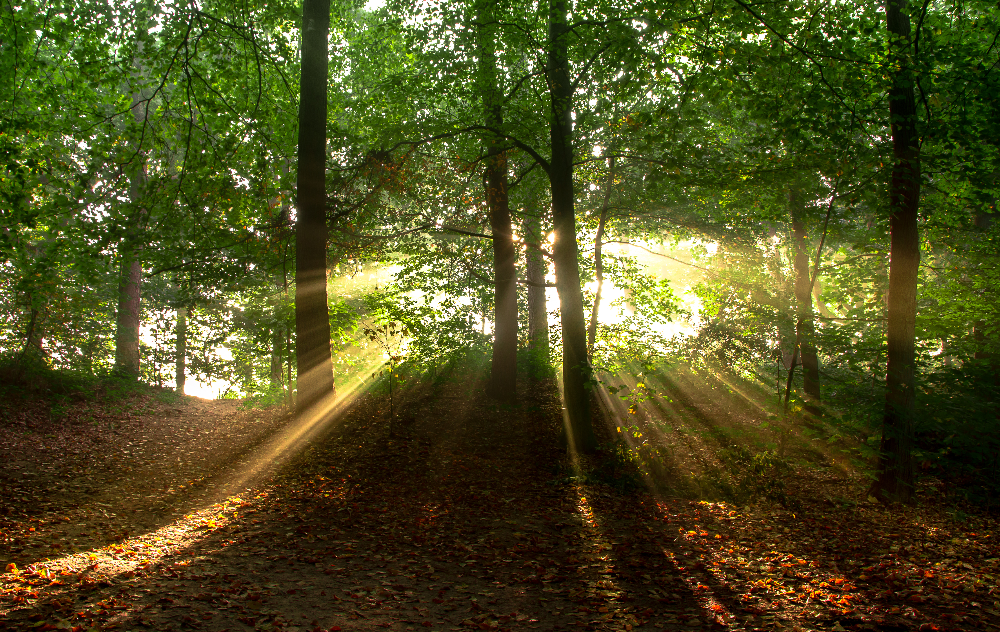

I refuse to wipe the mirror. For a moment, I see only my blurred outline and then even that fades. I move on, my reflection left somewhere behind in the fog. My bag of pills seems heavier, as if carrying versions of myself I haven't met.
The hallway opens slightly. Dawn light touches the floor ahead. It is faint but undeniable. I feel both relieved and apprehensive. The next choice will be harder to avoid.